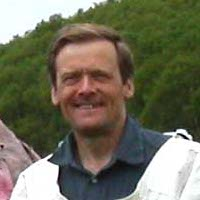
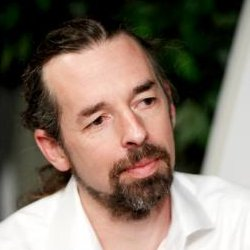

David KoesterDavid Koester is a socio-cultural anthropologist specializing in the peoples of the North and especially peoples and cultures of the North Pacific and North Atlantic. He has been working with Itelmen people in Kamchatka since 1992. His main focus over the years has been Itelmen cultural revitalization, Itelmen music, the legacy of Soviet social policies and life histories of individuals, including the extensive life history of Tatiana Petrovna Lukashkina. He is interested in the study of songs and poetic forms in the Itelmen language and in helping with efforts to preserve the language through both traditional means and current technology. |
Jonathan David BobaljikJonathan David Bobaljik is a linguist at the University of Connecticut and has been involved in fieldwork documenting Itelmen since 1993. He works primarily in the areas of theoretical morphology and syntax, with a focus on linguistic universals. His book Universals of Comparative Morphology will appear this summer with MIT Press.Website |